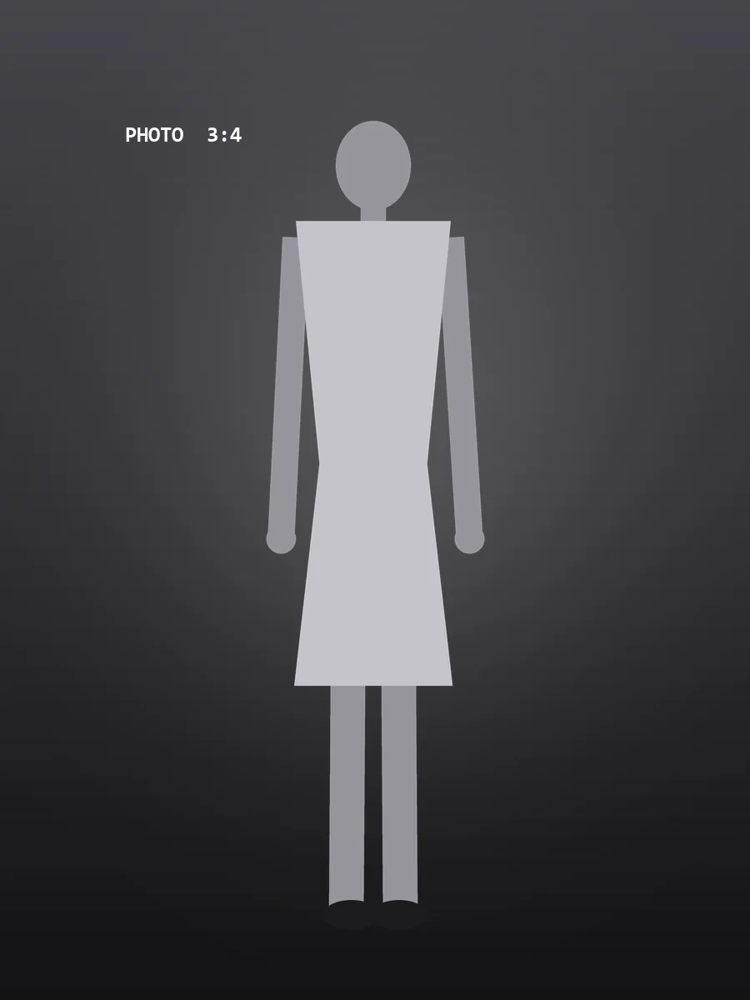
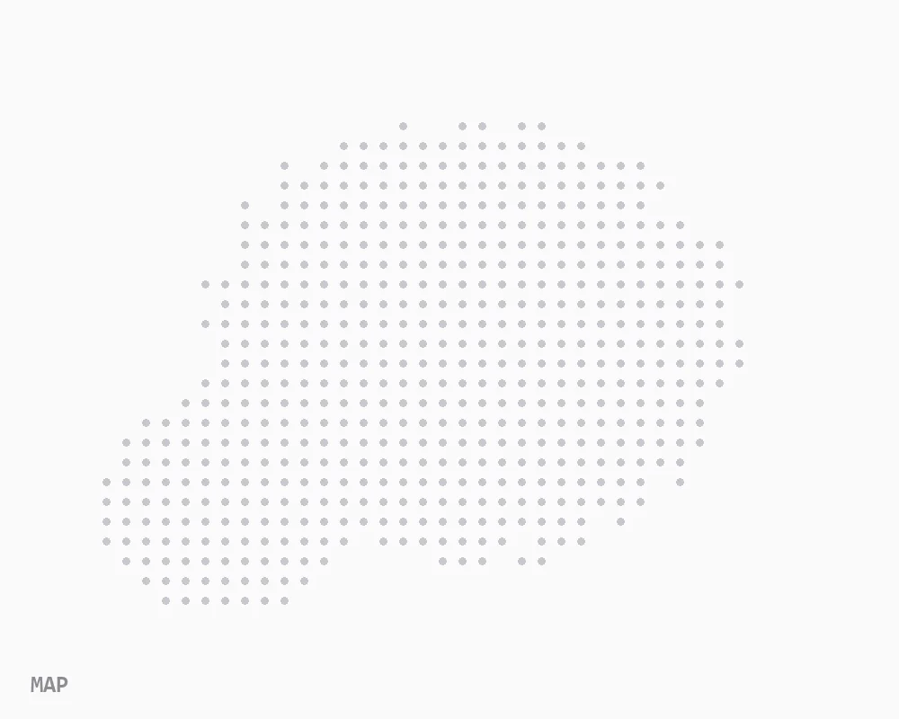
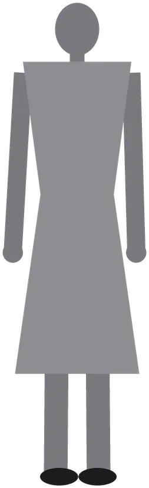
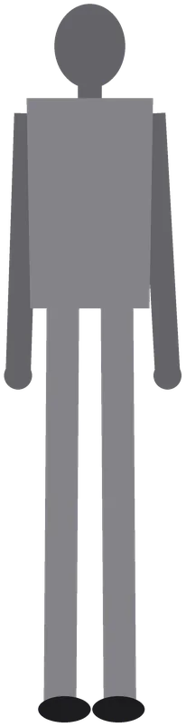
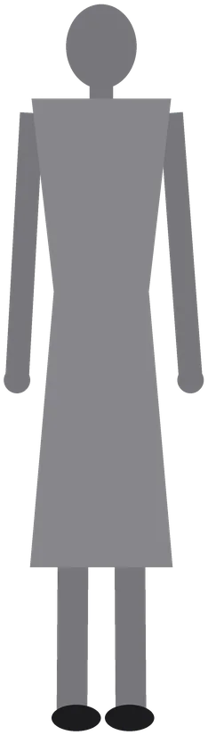
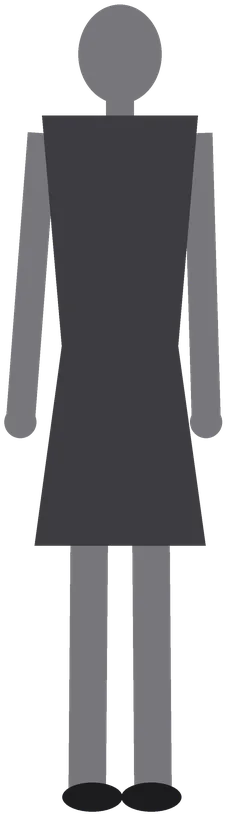
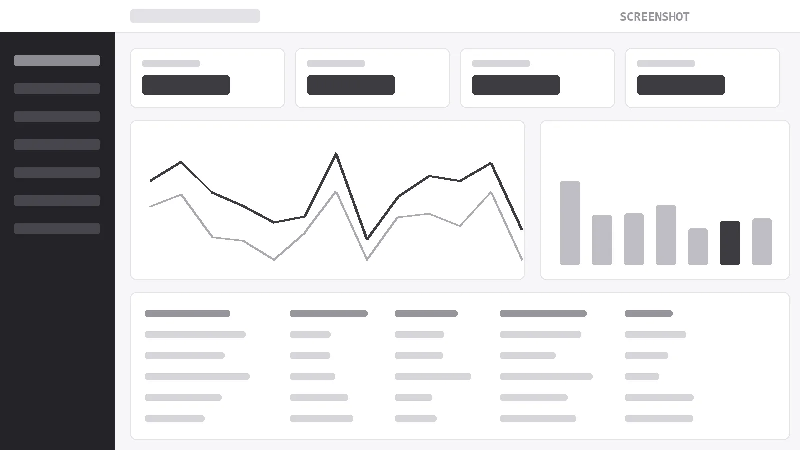
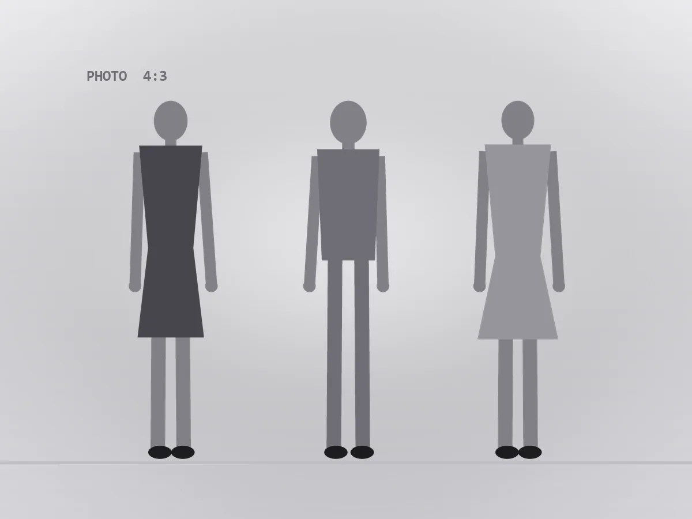
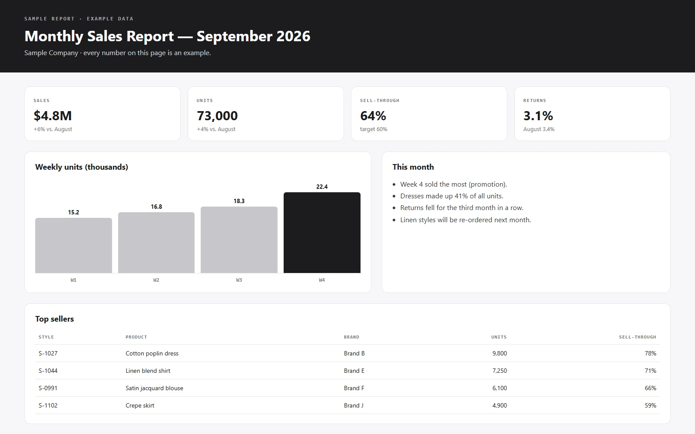

1NORTH 2CENTRAL 3SOUTH| Program | Category | Units (K) | FOB (USD) | Amount (K USD) |
|---|---|---|---|---|
| Core | Knit tops | 620 | 4.20 | 2,604 |
| Sleepwear | 410 | 6.10 | 2,501 | |
| Core subtotal | 1,030 | 5,105 | ||
| New | Woven dresses | 480 | 8.50 | 4,080 |
| Outerwear | 310 | 12.40 | 3,844 | |
| New subtotal | 790 | 7,924 | ||
| Total | 1,820 | 13,029 | ||





✓Brands and colors were taken out and every sample was shown in white, so buyers chose by fabric and silhouette alone.

Photo: sample imageWith no color or print to distract them, buyers could compare fabric and make side by side.
